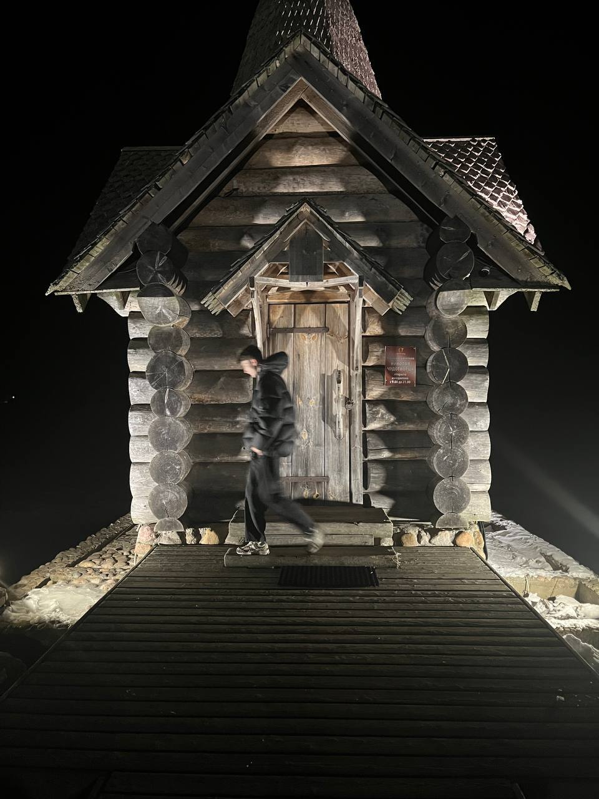

Образование
СПбГУПТД
группа 2-МД-20
Личная страница · Санкт-Петербург
Студент дизайна, который ищет стажировку или первую работу в разработке, цифровом контенте и DevOps.

Портрет / 2025Меня зовут Максим Дмитриевич Грибинюк. Я родился 26 декабря 2007 года в Санкт-Петербурге и сейчас учусь в Санкт-Петербургском государственном университете промышленных технологий и дизайна.
Моя группа — 2-МД-20. Мне близки среда, где можно создавать новое, и занятия, которые требуют характера и дисциплины.
СПбГУПТД
группа 2-МД-20
26.12.2007
Санкт-Петербург
КМС
плавание
Навыки, которые я развиваю через учёбу, спорт и практику.
Коммерческого опыта пока нет. Сейчас я учусь в СПбГУПТД, развиваю навыки веб-разработки и ищу возможность применить их на стажировке или первой работе.
Три разных ритма, которые помогают оставаться собранным и любопытным.
CS2 · 3000 ELO · топ-1000 игроков.
↗Движение, доверие и энергия команды.
↗КМС — результат регулярной работы.
↗Открыт к диалогу,
новым знакомствам и идеям.